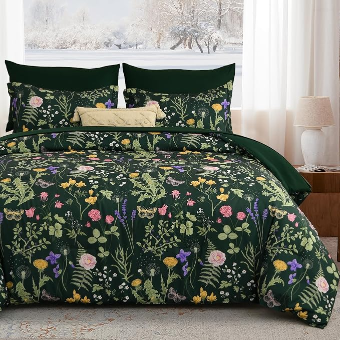
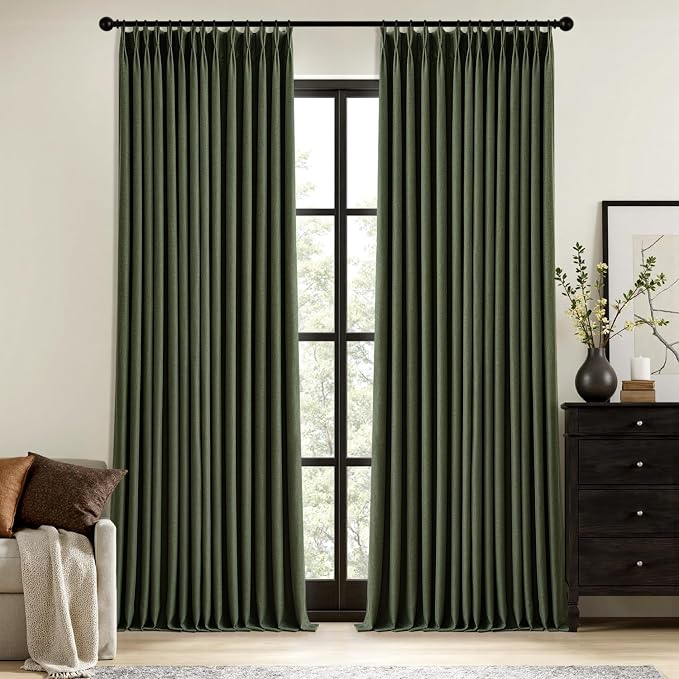
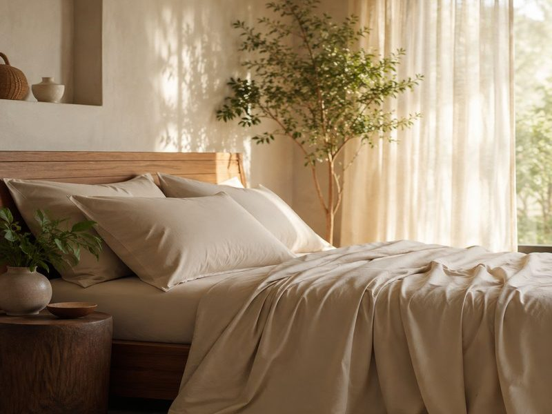

Everyone is told to paint a small bedroom white. Then the white walls meet dark bedding, a different-coloured door and a wooden floor, and the room is chopped into pieces. It is the edges that make a room feel small.
As an Amazon Associate I earn from qualifying purchases. Links below are affiliate links (#ad) - they cost you nothing extra. Nothing here is a paid placement, and no brand sees this page before it goes up.
White is not the point. What makes a small room read bigger is having fewer places for the eye to stop - and a white room full of contrasting furniture has more edges than a dark room where everything matches.
This is also why the same advice works in reverse. A deep, saturated bedroom with matching bedding and curtains reads as one continuous surface, and the walls stop announcing where they are.
The ones with something warm underneath. Olive, clay, deep brown and muted terracotta hold up under lamp light. Cold blues and greys are the ones that turn flat after dark, because there is no warmth in them for a warm bulb to pick up.
Whatever you choose, keep the ceiling in the same family rather than bright white. A white ceiling over a coloured room draws a lid on it.
Bedding before anything. It is the biggest single surface in the room after the walls, and it is the one you can change today.
Curtains second. Floor length and close to the wall colour. Velvet and heavy linen both hold colour better than thin cotton, which goes washed-out in daylight.
Then the light. Warm bulbs, two of them, at different heights. A deep colour under one cool ceiling light is the version everyone regrets.
Leave the floor alone. A rug in a fourth colour undoes the whole thing. If the floor is wrong, cover it in something close to the walls.

The fastest way to test the idea without paint. A full set means the whole bed lands in one colour rather than a duvet fighting the pillows. Green is the forgiving one - it reads warm under a lamp and does not go purple the way some deep blues do.
Best for: trying a one-colour room before committing to paint
See it on Amazon →paid link
The second surface. Blackout lining does the obvious job, but the reason to buy coloured ones is that a pale curtain against a deep wall is exactly the edge you are trying to remove. Hang them high and wide.
Best for: a rented bedroom where the walls cannot change
See it on Amazon →paid link
Our illustration of the look - not the product photoUnder the coloured layer, the sheets are the part you actually touch. Worth spending here rather than on another cushion in a fifth colour.
Best for: the layer nobody sees and everybody feels
See the range at Cariloha →paid linkStop trying to make a small bedroom light and start trying to make it continuous. Match the bedding to the walls, keep the ceiling in the same family, and put the light at two heights.
We look for pieces that change how a small room works, not the cheapest option and not the most photographed one. Everything here has to survive a rental: no drilling, no permanent fittings, nothing that needs a second person to install.
Room images on this site are our own illustrations, not photographs of the products. We link to the retailer so you can see the real item.
Written and selected by Rooms and Roads · Updated August 2026 · links checked August 2026